소방설비기사(전기분야) (2003-08-31 기출문제)
1과목: 소방원론
1. 목재 화재시 최기의 연소속도가 매분 평균 0.75m~1m씩 원형으로 확대한다면 발화 5분 후 연소된 면적은 약 몇 m2정도 되는가?
- 38~70
- 38~78.5
- 40~65
- 44~78.5
(정답률: 38%)

2. 제1종가연물에 해당되는 물질은?
- 고무풀
- 대패밥
- 톱밥
- 석탄
(정답률: 41%)
3. 복사에 대한 설명으로 틀린 것은?
- 복사는 전자파의 형태로 에너지를 전달한다.
- 복사에너지의 전파속도는 빛과 같다.
- 복사에너지의 파장이 가시광선대에 들어가면 빛을 발한다.
- 진공속에서는 복사에 의한 전열이 이루어지지 아니한다.
(정답률: 70%)
4. 스테판-볼쯔만(Stefan-Boltzman)법칙에 맞는 것은?
- 복사열은 절대온도의 제곱에 비례한다.
- 복사열은 절대온도의 4제곱에 비례한다.
- 복사열은 열전달 면적의 제곱에 비례한다.
- 복사열은 열전달 면적의 4제곱에 비례한다.
(정답률: 77%)
5. 피난을 위한 시설물이라고 볼 수 없는 것은?
- 객석유도등
- 내화구조
- 방연커텐
- 특별피난계단전실
(정답률: 44%)
6. 가연성 액체에 점화원을 가져가서 인화된 후에 점화원을 제거하여도 가연물이 계속 연소되는 최저온도를 무엇이라 하는가?
- 인화점
- 폭발온도
- 연소점
- 자동발화점
(정답률: 70%)
7. 정전기의 발생이 가장 적은 것은?
- 자동차를 장시간 주행하는 경우
- 위험물 옥외탱크에 석유류를 주입하는 경우
- 공기 중의 습도가 높은 경우
- 부도체를 마찰시키는 경우
(정답률: 66%)
8. 황이나 나프탈렌 같은 고체위험물의 연소 형태는?
- 표면연소
- 증발연소
- 자기연소
- 분해연소
(정답률: 69%)
9. 피난계획의 일반적 원칙이 아닌 것은?
- 피난경로는 간단 명료할 것
- 두 방향의 피난동선을 항상 확보하여 둘 것
- 피난수단은 이동식 시설을 원칙으로 할 것
- 인간의 특성을 고려하여 피난계획을 세울 것
(정답률: 90%)
10. 소화원리에 대한 일반적인 소화효과의 종류가 아닌 것은?
- 질식소화
- 제거소화
- 기압소화
- 냉각소화
(정답률: 89%)
11. 건축방화계획에서 건축구조 및 재료를 불연화하므로서 화재를 미연에 방지하고자 하는 공간적 대응은?
- 회피성 대응(回避性 對應)
- 도피성 대응(逃避性 對應)
- 대항성 대응(對抗性 對應)
- 설비적 대응(設備的 對應)
(정답률: 59%)
12. 다음 중 휘발유의 인화점은?
- -18℃
- -43℃
- 11℃
- 70℃
(정답률: 44%)
13. 방화안전관리시에 화점의 관리사항으로 볼 수 없는 것은?
- 화기책임자를 선정한다.
- 화기의 사용시간과 장소를 제한한다.
- 스프링클러설비 등을 사용 하여 화재를 진압한다.
- 가연물과 위험물의 보관방법을 개선한다.
(정답률: 68%)
14. 유류 저장탱크의 화재중 열류층(HEAT LAYER)을 형성, 화재의 진행과 더불어 열류층이 점차 탱크 바닥으로 도달해 탱크 저부에 물 또는 물기름 에멀젼이 수증기로 변해 부피팽창에 의하여 유류의 갑작스런 탱크 외부로의 분출을 발생시키면서 화재를 확대시키는 현상은?
- 보일오버(BOIL OVER)
- 스로프오버((SLOP OVER)
- 프로스오버((FROTH OVER)
- 프래시오버(FLASH OVER)
(정답률: 87%)
15. 화재발생시 소화작업에 주로 물을 이용한다. 물을 이용하는 주된 목적은 무엇 때문인가?
- 가연물질을 제거하기 위해서
- 물의 증발잠열을 이용하기 위해서
- 공기중의 산소공급을 차단하기 위해서
- 물의 현열을 이용하기 위해서
(정답률: 83%)
16. 인화성 물질이 아닌 것은?
- 기계유
- 질소
- 이황화탄소
- 에테르
(정답률: 76%)
17. 이산화 탄소의 소화능력을 1 로한 경우 분말 소화약제의 소화능력은 얼마인가?
- 1.1
- 1.4
- 2
- 3
(정답률: 45%)
18. 자연발화의 예방대책으로 옳지 않은 것은?
- 습도가 낮은곳을 피한다.
- 통풍을 양호하게 한다.
- 열의 축적을 방지한다.
- 주의 온도를 낮게한다.
(정답률: 71%)
19. 무장층에서 개구부로 인정되기 위한 필요 조건은?
- 개구부 크기가 지름 30cm의 원이 내접할 수 있는 것.
- 그 층의 바닥면으로부터 개구부 밑부분까지의 높이가 1.5m인 것.
- 내부 또는 외부에서 쉽게 파괴 또는 개방이 가능할 것.
- 창에 방범을 위하여 40cm 간격으로 창살을 설치한 것
(정답률: 85%)
20. 가연된 금속분말에 물을 뿌릴 때 수소(H2)가 발생하지 않는 것은?
- Co
- Na
- K
- Li
(정답률: 67%)
2과목: 소방전기회로
21. 온도를 전압으로 변환시키는 요소는?
- 광전기
- 열전대
- 측온저항체
- 차동변압기
(정답률: 51%)
22. 파고율이 2가 되는 파형은?
- 반파정류파
- 톱니파
- 전파정류파
- 정현파
(정답률: 45%)
23. 시퀀스제어에 관한 설명중 옳지 않은 것은?
- 논리회로가 조합사용된다.
- 기계적 계전기접점이 사용된다.
- 전체시스템에 연결된 접점들이 일시에 동작할 수 있다.
- 시간 지연요소가 사용된다.
(정답률: 77%)
24. 그림과 같은 결합회로의 합성인덕턱스는 몇 H 인가?
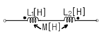
- L1+L2+2M
- L1+L2-2M
- L1+L2+M
- L1+L2-M
(정답률: 60%)
25. 그림과 같은 정류회로에서 R에 걸리는 최대 역전압은 몇 V인가? (단, Vi 는 정현파 전압이다.)
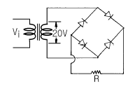
- 20
- 20√2
- 40
- 40√2
(정답률: 69%)
26. 주기적인 구형파의 신호는 그 주파수 성분이 어떻게 되는가?
- 무수히 많은 주파수의 성분을 가진다.
- 주파수 성분을 갖지 않는다.
- 직류분만으로 구성된다.
- 교류 합성을 갖지 않는다.
(정답률: 52%)
27. 조절부와 조작부로 이루어진 것을 무엇이라 하는가?
- 제어요소
- 제어대상
- 피드백요소
- 기준입력요소
(정답률: 77%)
28. 선간전압 E[V]의 3상 평형전원에 대칭 3상저항부하 R[Ω]이 그림과 같이 접속되었을 때 a, b 두 상간에 접속된 전력계의 지시값이 W[W]라면 C상의 전류는 몇 A 인가?
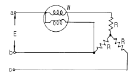
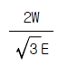
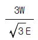
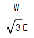
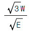
(정답률: 66%)
29. 전기기기에 생기는 손실중 권선의 저항에 의하여 생기는 손실은?
- 철손
- 동손
- 저항손
- 유전체손
(정답률: 67%)
30. SCR의 양극전류가 10A일 때 게이트전류를 2배로 늘리면 양극전류는 몇 A 인가?
- 0
- 10
- 20
- 40
(정답률: 74%)
31. 변위를 압력으로 변환시키는 장치는?
- 벨로우즈
- 다이어프램
- 가변저항기
- 유압분사관
(정답률: 39%)
32. 다이오드를 사용한 정류회로에서 과대한 부하전류에 의하여 다이오드가 파손될 우려가 있을 경우의 적당한 대책은?
- 다이오드를 직렬로 추가한다.
- 다이오드를 병렬로 추가한다.
- 다이오드의 양단에 적당한 값의 저항을 추가한다.
- 다이오드의 양단에 적당한 값의 콘덴서를 추가한다.
(정답률: 69%)
33. 동일한 조건에서 전동기중 기동토크가 가장 큰 것은?
- 보통 농형 유도전동기
- 권선형 유도전동기
- 분상기동형 유도전동기
- 반발기동형 유도전동기
(정답률: 75%)
34. 알칼리 축전지의 음극의 재료는?
- 수산화니켈
- 카드뮴
- 이산화연
- 연
(정답률: 69%)
35. 피드백 제어에서 반드시 필요한 장치는?
- 구동장치
- 출력장치
- 입력과 출력을 비교하는 장치
- 안정도를 좋게 하는 장치
(정답률: 80%)
36. 회로에서 CD간의 전압을 100V로 할 때 AB간의 단자전압은 몇 V인가?
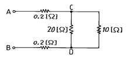
- 100
- 102
- 104
- 106
(정답률: 33%)
37. 무한장 직선도체에 1A의 전류가 흐른다. 이 때 생기는 자계의 세기가 0.2AT/m인 점은 도체로부터 몇 m 떨어진 점인가?
- 5/π
- 5/2π
- 5π
- 10π
(정답률: 48%)
38. 측정량과 별도로 크기를 조정할 수 없는 표준량을 준비하고 이것을 표준량과 평행시켜 표준량으로부터 측정량을 구하는 방법으로 감도가 좋고 정밀측정에 적합한 측정 방법은?
- 편의법
- 직편법
- 영위법
- 반경법
(정답률: 50%)
39. 논리식
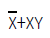
를 간단히 나타낸 것은?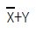
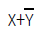
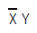
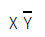
(정답률: 61%)
40. 역률을 개선하기 위하여 설치하는 진상콘덴사는 어느 위치에 설치하는 것이 가장 효과가 좋은가?
- 수전점
- 고압모선
- 변압기 2차측
- 부하와 병렬
(정답률: 61%)
3과목: 소방관계법규
41. 위험물제조소에 환기설비를 시설할 때 바닥면적이 100m2라면 급기구의 면적은 몇 cm2 이상이어야 하는가?
- 150
- 300
- 450
- 600
(정답률: 30%)
42. 다음의 소방시설이 설치기준에 적합하게 설치되어 있더라도 당해설비의 유효범위안의 부분에 자동화재탐지설비를 면제 받을 수 없는 것은?
- 스프링클러설비
- 물분무소화설비
- 포소화설비
- 연결살수설비
(정답률: 42%)
43. 소방시설공사 후 설비의 하자보수기간으로 그 기간이 1년인 것은?(관련 규정 개정전 문제인듯 합니다. 기존 정답은 2번이며 여기서는 2번을 누르면 정답 처리 됩니다. 자세한 내용은 해설을 참고하세요.)
- 자동식소화기
- 비상방송설비
- 자동화재탐지설비
- 스프링클러설비
(정답률: 59%)
44. 방화관리자를 두어야 할 특수장소중 1급 방화관리대상물에 해당되는 것은?
- 스프링클러설비 또는 물분무등소화설비를 설치하는 연면적 3000m2인 소방 대상물
- 자동차재탐지설비를 설치한 연면적 3000m2인 소방 대상물
- 전력용 또는 통신용 지하구
- 가연성가스를 1000톤이상 저장, 취급하는 시설
(정답률: 73%)
45. 가스시설로서 지상에 노출된 탱크의 저장용량의 합계가 몇톤 이상 이어야 하는가?
- 100
- 200
- 300
- 400
(정답률: 49%)
46. 위험물탱크안전성능시험자가 반드시 갖추어야 할 장비에 해당되는 것은?
- 수압기
- 비중계
- 유량계
- 절연저항측정기
(정답률: 40%)
47. 옥외탱크저장소의 펌프설비에서 펌프설비의 주위에는 몇 미터이상의 공지를 보유하여야 하는가?
- 3
- 4
- 5
- 6
(정답률: 40%)
48. 소방시설의 종류에 대한 설명으로 옳은 것은?
- 소화기구, 옥내 소화전설비는 소화설비에 해당된다.
- 유도등, 비상조명등설비는 경보설비에 해당된다.
- 상수도소화용수설비는 소화활동설비에 해당된다.
- 연결살수설비는 소화용수설비에 해당된다.
(정답률: 60%)
49. 다음중 소방용 기계ㆍ기구등의 형식승인을 얻고자 하는 사람은 어떤 법 기준에 따라야 하는가?
- 대통령령
- 국무총리령
- 행정자치부령
- 시ㆍ도 조례
(정답률: 25%)
50. 소방대상물의 위치, 구조, 설비 또는 관리의 상황에 관하여 화재 예방상 필요하거나, 화재가 발생하면 인명에 위험이 미칠 것으로 인정될 때에는 관계인에게 당해 소방대상물의 개수명령 등의 필요한 조치를 명할 수 있는 사람은?
- 시ㆍ도지사
- 시장ㆍ군수
- 당해 소방대상물의 방화관리자
- 소방서장 또는 소방본부장
(정답률: 74%)
51. 화재예방, 소화활동, 소방훈련을 위하여 사용되는 신호의 종류와 방법은 누가 정하는가?
- 행정자치부령
- 소방본부장
- 소방서장
- 대통령
(정답률: 45%)
52. 소방본부장 또는 소방서장의 직무로 옳은 것은?
- 이상기상의 예보 또는 특보가 있을지라도 화재위험경보를 발할 수는 없다.
- 화재를 예방하기 위하여 필요한 때에는 기간을 정하여 일정한 구역안에 있어서의 모닥불, 흡연 등 화기취급을 금지하거나 제한할 수 있다.
- 화재의 위험경보가 해제될 때까지 관계인은 해당구역안에 상주하여야 한다.
- 화재의 현장에 방화 경계구역을 설정할 수 있으나 그 구역으로부터 퇴거를 명하거나 출입을 금지 또는 제한할 수는 없다.
(정답률: 72%)
53. 주유취급소에 설치하여서는 아니 되는 것은?
- 볼링장 또는 대중이 모이는 체육시설
- 주유취급소의 관계자가 거주하는 주거시설
- 자동차 등의 세정을 위한 작업장
- 주유취급소에 출입하는 사람을 대상으로 하는 점포
(정답률: 66%)
54. 화재예방, 소화활동, 소방훈련을 위하여 사용되는 신호를 무엇이라 하는가?
- 소방신호
- 대피신호
- 훈련신호
- 구급신호
(정답률: 58%)
55. 방염대상물품외에 방염처리가 필요하다고 인정되는 경우에 소방서장이 방염제품을 사용하도록 권장할 수 있는 물품은?
- 책상
- 전등
- 전선
- 침구류
(정답률: 47%)
56. 방화관리업무 등에 관한 강습은 누가 실시하는가?
- 시.도지사
- 소방서장
- 한국소방안전협회장
- 한국소방검정공사사장
(정답률: 62%)
57. 위험물 제조소등의 허가취소 또는 사용정지 사유가 아닌 것은?
- 허가조건 위반
- 위험물 시설안전원을 두지 않았을 때
- 유자격 안전관리자를 선임하지 않았을 때
- 제조소의 위치, 구조, 설비를 허가없이 변경한 때
(정답률: 50%)
58. 소방대상물의 검사시 자료를 제출하지 않거나 허위자료를 제출한 자 또는 정당한 사유없이 관계공무원의 출입 또는 검사를 거부하거나 방해 또는 기피한 자의 벌칙에 해당하는 것은?
- 100만원 이하의 벌금
- 200만원이하의 벌금
- 1년이하의 징역 또는 100만원이하의 벌금
- 1년이하의 징역 또는 200만원이하의 벌금
(정답률: 50%)
59. 제조소 등의 설치자가 위험물안전관리자를 해임한 때에는 그 해임한 날부터 몇 일이내에 위험물안전관리자를 선임하여야 하는가?
- 7
- 10
- 20
- 30
(정답률: 76%)
60. 시.도간의 소방업무 상호 응원협정을 할 때는 미리 규약을 정하여야 하는데 필요사항이 아닌 것은?
- 소방신호방법의 통일
- 응원출동 대상지역 및 규모
- 소요경비의 부담 구분
- 연전출동의 요청방법
(정답률: 54%)
4과목: 소방전기시설의 구조 및 원리
61. 자동화재재탐지설비에서 비화재보가 빈번할 때의 조치로서 적당하지 않은 것은?
- 감지기 설치장소에 급격한 온도상승을 가져오는 발열체가 있는지를 조사
- 전원회로의 전압계 지시치가 0 인가를 확인
- 수신기 내부의 계전기 기능을 조사
- 감지기 회로배선의 절연상태 조사
(정답률: 54%)
62. 옥외형 M형 발신기는 100V에서 300V까지의 전압으로 작동하는 용량 3A의 무엇을 갖추어야 하는가?
- 보안기
- 중계기
- 수신기
- 경보기
(정답률: 24%)
63. 누전경보기의 증폭기는 어느 부분에 내장되어 있는가?
- 변류기
- 수신기
- 경보기
- 계전기
(정답률: 41%)
64. 발신기를 기능에 따라 분류한 것이 아닌 것은?
- R형
- T형
- M형
- P형
(정답률: 23%)
65. 제연설비의 비상전원으로 자사발전설비를 사용했을 경우 그것의 용량은 제연설비를 몇 분이상 가동시킬 수 있어야 하는가?
- 10
- 20
- 30
- 60
(정답률: 57%)
66. 자동화재탐지설비의 감지기회로의 전로저항은 몇 Ω이하가 되도록 하여야 하는가?
- 30
- 40
- 50
- 60
(정답률: 62%)
67. 피난구 유도등의 설치장소로 적장하지 않는 곳은?
- 거실 각 부분으로부터 쉽게 도달할 수 있는 출입구
- 옥내로부터 직접 지상으로 통하는 출입구
- 직통계단, 직통계단의 계단실 및 그 부속실의 출입구
- 안전 구획된 거실로 통하는 출입구
(정답률: 45%)
68. 주요구조부가 내화구조로된 소방대상물의 자동화재탐지 설비중 열전대식차동식 분포형감지기의 설치기준으로 옳은 것은?
- 열전대부는 감지구역의 바닥면적 18m2마다 1개이상으로 하고 하나의 검출부에 접속하는 연전대부는 15개이하로 한다.
- 열전대부는 감지구역의 바닥면적 22m2마다 1개이상으로 하고 하나의 검출부에 접속하는 열전대부는 15개이하로 한다.
- 열전대부는 감지구역의 바닥면적 18m2마다 1개이상으로 하고 하나의 검출부에 접속하는 연전대부는 20개 이하로 한다.
- 열전대부는 감지구역의 바닥면적 22m2마다 1개이상으로 하고 하나의 검출부에 접속하는 연전대부는 20개 이하로 한다.
(정답률: 33%)
69. 자동화재탐지설비의 감지기 설치 높이가 10m인 장소에 설치할 수 있는 감지기의 종류는?
- 차동식스포트형
- 보상식스포트형
- 차동식분포형
- 정온식스포트형
(정답률: 52%)
70. 종합방재센터에서 이용하는 제어방식이 아닌 것은?
- Ten Key를 이용한 제어방식
- Optimization을 이용한 제어방식
- Light Pen을 이용한 제어방식
- Touch Screen을 이용한 제어방식
(정답률: 43%)
71. 공기관식감지기의 화재감지 동작순서를 옳게 나타낸 것은?
- 열→관내 공기팽창 →리크밸브 동작→회로접점 접속
- 열→다이아프램 팽창→리크밸브 동작→회로접점접속
- 열→관내 공기팽창→다이아프램 팽창→회로접점 접속
- 열→리크밸브 동작→관내 공기팽창→회로접점 접속
(정답률: 60%)
72. 축전지설비의 구성요소로 맞지 않는 것은?(오류 신고가 접수된 문제입니다. 반드시 정답과 해설을 확인하시기 바랍니다.)
- 방전장치
- 보안장치
- 제어장치
- 역변환장치
(정답률: 36%)
73. R형수신기의 기능과 가스누설경보기의 수신부 기능을 겸한 수신기는?
- M형수신기
- R형수신기
- GP수신기
- GR수신기
(정답률: 67%)
74. 비상방송설비에 음량 조정기를 설치할 경우 음량 조정기의 배선방식으로 옳은 것은?
- 1선식
- 2선식
- 3선식
- 4선식
(정답률: 75%)
75. 이산화탄소소화설비의 음향경보장치로 방송에 의한 경보장치를 설치할 경우 방호구역 또는 방호대상물이 있는 구획의 각 부분으로부터 하나의 확성기까지의 수평거리는 몇 m 이하가 되도록 하여야 하는가?
- 25
- 30
- 35
- 50
(정답률: 72%)
76. 자동화재속보설비의 설치기준중 맞지 않는 것은?
- 자동화재탐지설비와 연동으로 작동하여 소방관서에 전달되는 것으로 한다.
- 스위치는 사람이 만지지 못하도록 자물쇠장치를 하여 둔다.
- 종합방재센터가 설치되어 있고, 상시근무하는 자가 있는 경우에는 설치하지 아니할 수 있다.
- 스위치는 바닥으로부터 0.8m이상, 1.5m이하의 높이에 설치한다.
(정답률: 71%)
77. 비상콘센트에 접지공사를 하는 경우 접지공사의 종류는?
- 제1종접지
- 제2종접지
- 제3종접지
- 특별제3종접지
(정답률: 63%)
78. 무선통신보조설비의 무선기기 접속단자의 설치기준으로 옳지 않은 것은?
- 지상에서 유효하게 소방활동을 할 수 있는 장소 또는 수위실 등 상시 사람이 근무하고 있는 장소에 설치한다.
- 단자는 한국산업규격에 적합한 것으로 하고, 바닥으로부터 높이 0.8m이상, 1.5m이하의 위치에 설치한다.
- 지상에 설치하는 접속단자는 보행거리 400m이내마다 설치하고 다른 용도로 사용되는 접속단자에서 5m이상의 거리를 둔다.
- 단자의 보호함의 표면은 적색으로 도색하고 “무선기접속단자”라고 표시한 표지를 한다.
(정답률: 71%)
79. 이산화탄소 소화설비의 제어반의 설치장소로 적합지 않은 곳은?
- 화재에 의한 영향이 없는 곳
- 진동 및 충격에 의한 영향이 없는 곳
- 부식성 가스가 발생하는 곳
- 점검에 편리한 장소
(정답률: 80%)
80. 차동식스포트형 감지기의 구조에 해당되는 것은?
- 공기팽창을 이용
- 바이멜탈을 이용
- 열반도체를 이용
- 공기팽창과 열기전력을 이용
(정답률: 35%)
따라서, 발화 5분 후에는 최기의 연소가 시작된 지점에서 반지름이 1.875m~2.5m인 원 안에 있는 모든 목재가 연소되었을 것이다. 이 원의 면적은 πr2이므로, 약 44m2~78.5m2 정도가 된다.
따라서, 정답은 "44~78.5"이다.